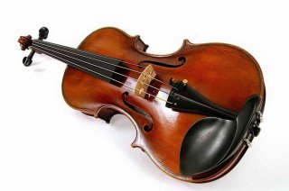
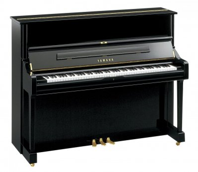

Музичні інструменти
Скрипка
Скри́пка — струнний музичний смичковий інструмент.
Має чотири струни, які настроюють на квінту.
З'явився у середині XVI століття.
Музиканта, що грає на скрипці, називають скрипалем, іноді — скрипарем, скрипаком.
Майстер, що виготовляє скрипки, називається скрипником.
Скрипка складається з двох основних частин: корпусу та грифа, уздовж якого натягнуті струни.
Розмір повної скрипки становить 60 см, вага — 300—400 грамів.
Піаніно
Піані́но (італ. pianino — маленьке фортепіано) — музичний інструмент, різновид фортепіано, в якому струни, дека і механічна частина розташовані вертикально, а не горизонтально, внаслідок чого піаніно займає значно менше місця, ніж рояль.
Перше піаніно було сконструйоване у 1709 році італійцем Бортоломео Крістофорі.
Але сучасну форму піаніно отримало лише в середині 19 сторіччя (чавунна рама, перехресні струни, механіка з нижнім і верхнім розташуванням демпферів).
Найпоширеніші кабіне́тні піані́но мають ширину корпусу по клавіатурі 1450–1500 мм і висоту близько 1250–1400 мм, мають діапазон в 7 октав

Флейта
Фле́йта — загальна назва духових музичних інструментів, в яких повітряний стовп починає коливатися під дією струменю повітря, що розсікається об гострий край стінки цівки.
Флейтою зазвичай називають найпоширеніший у професійній музиці різновид флейт — поперечну флейту.